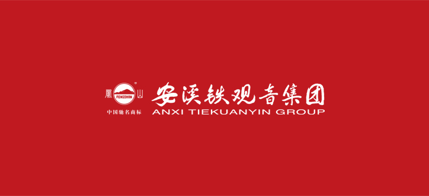
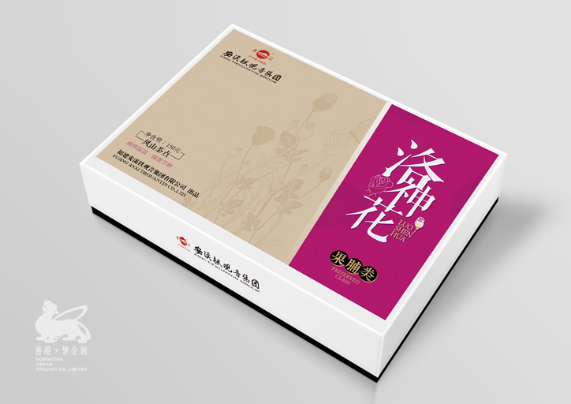
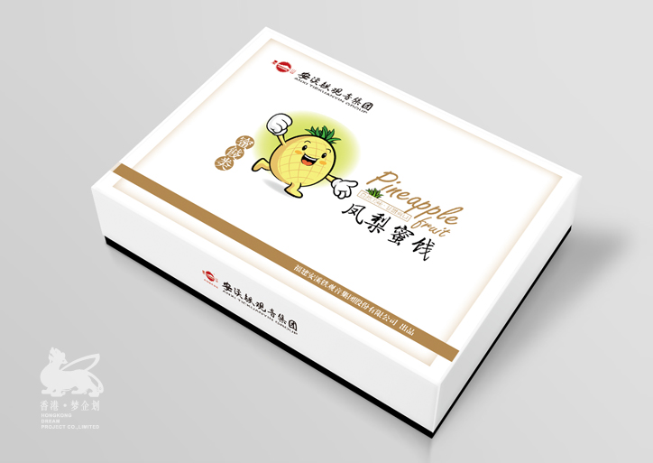
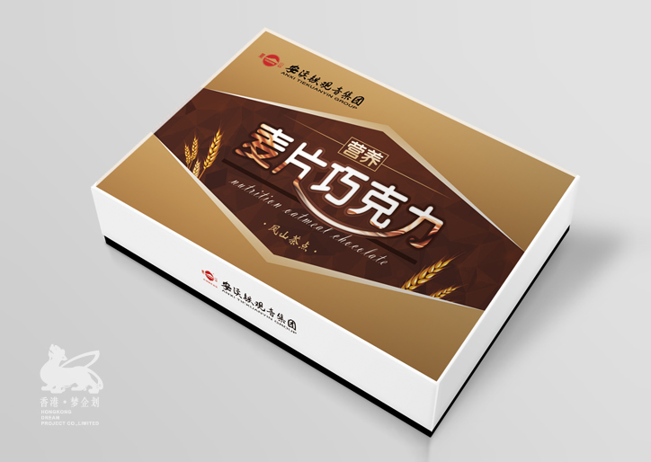
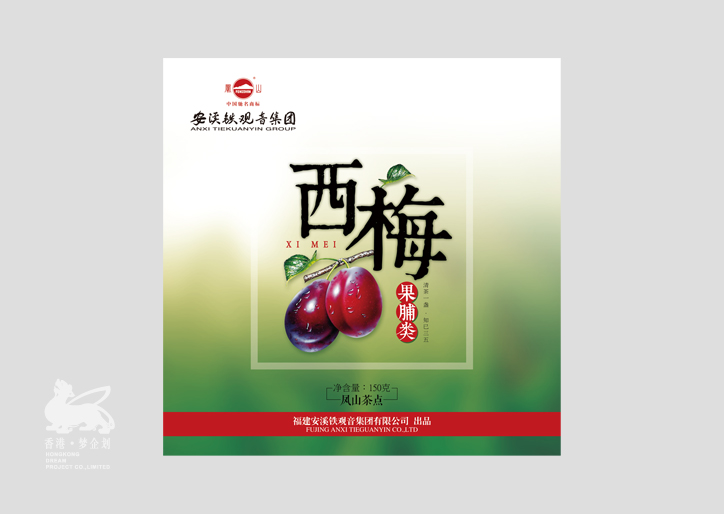
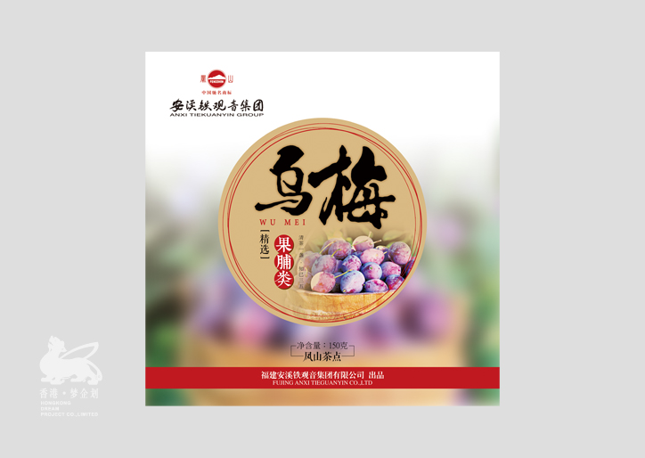
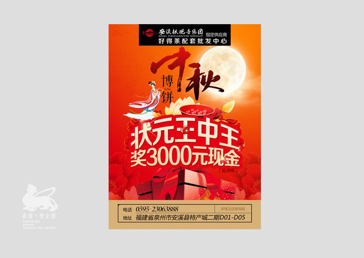

公司背景
安溪铁观音集团是安溪茶叶领头品牌之一，作为五十年代就创立的老品牌企业他们有更全面品牌的发展和产品线。
但是市场的发展和需求是不断在变化的，为了能够迎合市场和消费人群的喜好，他们找到我们并建立了长远的合作关系...
茶食品包装规划及宣传海报设计
茶食品作为茶饮点心，我们抓住茶饮消费者更侧重生活情调的特点在包装的开发上更简约时尚、大方干净，消费欲也是可以简单的激发的。
安溪铁观音集团是茶叶老品牌，我们抓住他们知名度高品牌效应强的特点在包装和海报页面的设计上都立求简单有力，大气大方，这样的思
路，让我们双方在合作上更容易达成一致，深入合作。
服务内容
1、安溪铁观音集团产品包装开发
2、新品开发市场系统研究
3、新品体验度系统调研
4、活动海报策划与设计
      